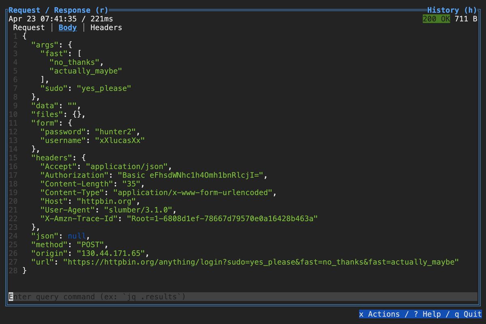

Data Filtering & Querying
When browsing an HTTP response in Slumber, you may want to filter, query, or otherwise transform the response to make it easier to view. Slumber supports this via embedded shell commands. The query box at the bottom of the response pane allows you to execute any shell command, which will be passed the response body via stdin and its output will be shown in the response pane. You can use grep, jq, sed, or any other text processing tool.
Example of querying with jq

Example of using pipes in a query command
Exporting data
Keep in mind that your queries are being executed as shell commands on your system. You should avoid running any commands that interact with the file system, such as using > or < to pipe to/from files. However, if you want to export response data from Slumber, you can do so with the export command palette. To open the export palette, select the Response pane and press the export key binding (: by default). Then enter any shell command, which will receive the response body as stdin.
Note: For text bodies, whatever text is visible in the response pane is what will be passed to stdin. So if you have a query applied, the queried body will be exported. For binary bodies, the original bytes will be exported.
Some useful commands for exporting data:
tee > response.json- Save the response toresponse.jsonteetakes data from stdin and sends it to zero or more files as well as stdout. Another way to write this would betee response.json
pbcopy- Copy the body to the clipboard (MacOS only - search online to find the correct command for your platform)
Remember: This is a real shell, so you can pipe through whatever transformation commands you want here!
Default command
You can set the default command to query with via the commands.default_query config field. This accepts either a single string to set it for all content types, or a MIME map to set different defaults based on the response content type. For example, to default to jq for all JSON responses:
commands:
default_query:
json: jq
Which shell does Slumber use?
By default, Slumber executes your command via sh -c on Unix and cmd /S /C on Windows. You can customize this via the commands.shell configuration field. For example, to use fish instead of sh:
commands:
shell: [fish, -c]
If you don't want to execute via any shell, you can set it to []. In this case, query commands will be parsed via shell-words and executed directly. For example, jq .args will be parsed into ["jq", ".args"], then jq will be executed with a single argument: .args.